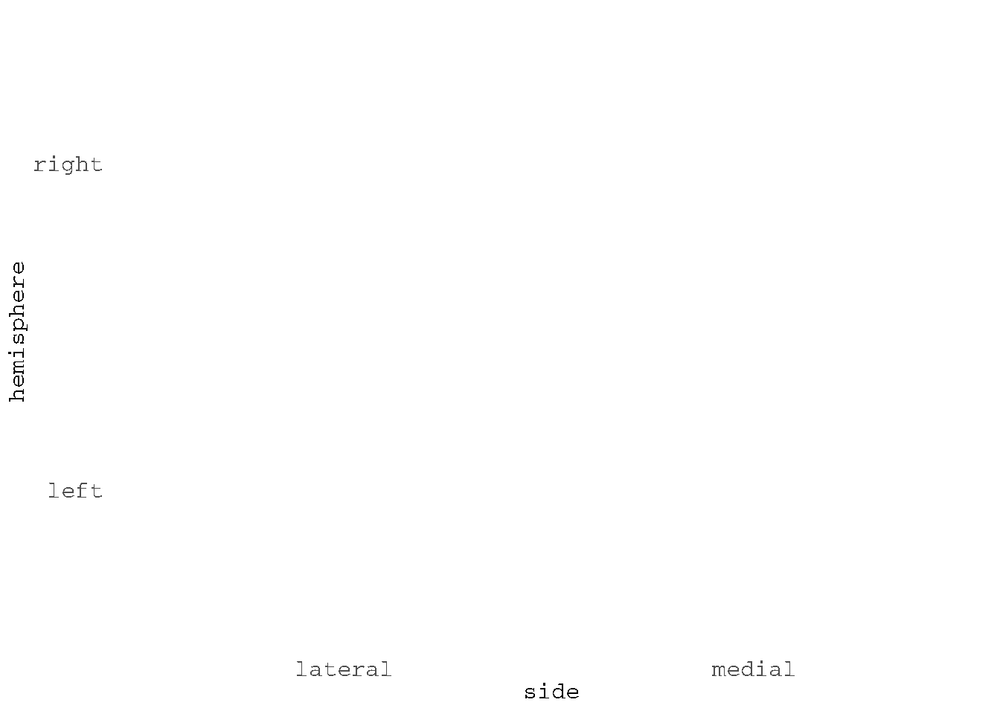
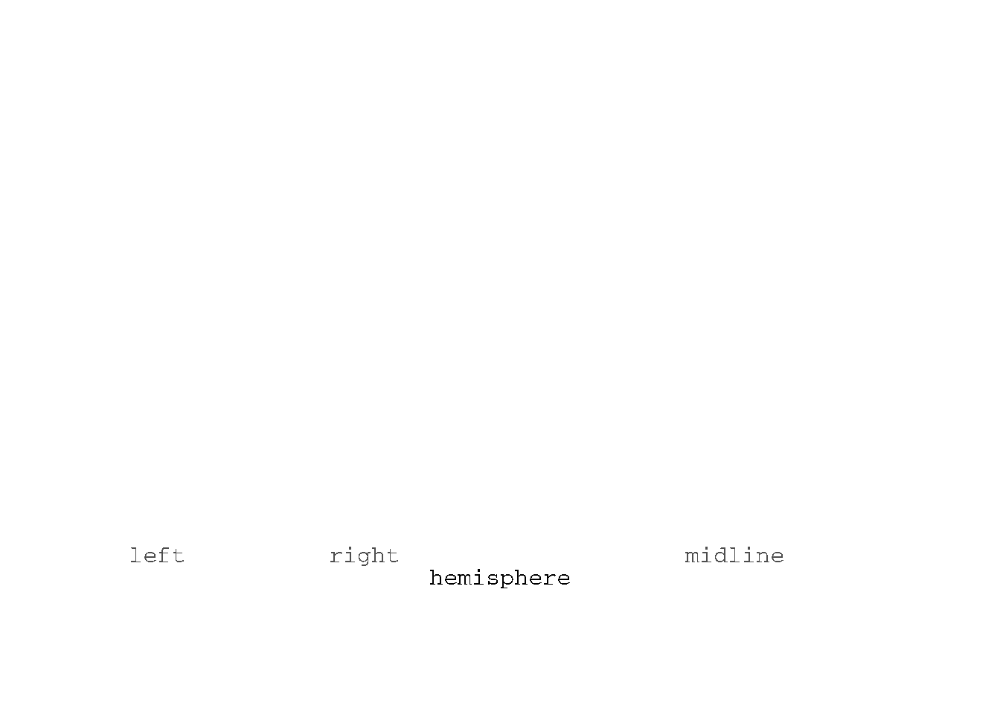
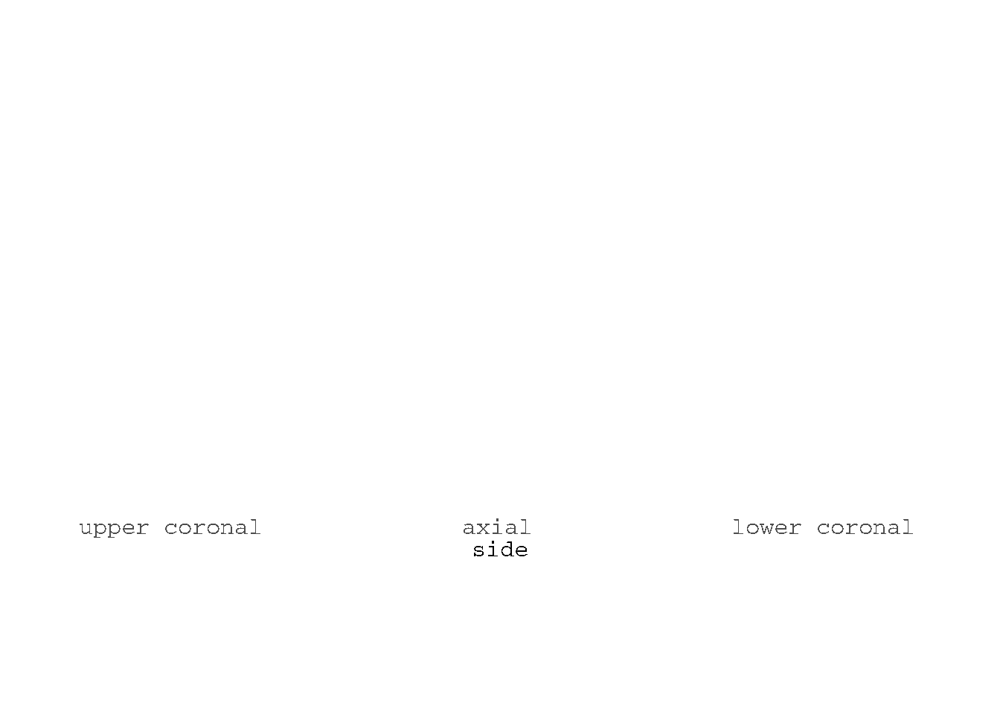
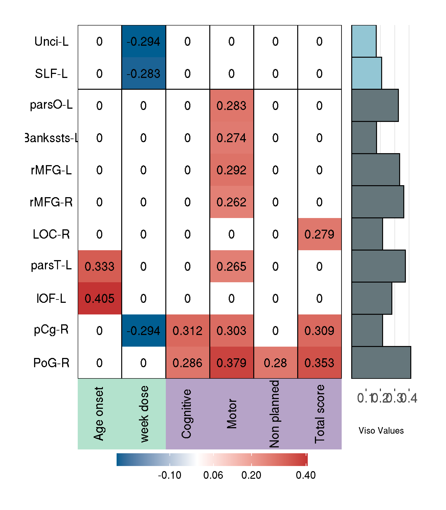

Last updated: 2020-10-22
Checks: 7 0
Knit directory: Viso-NODDI-in-CUD/
This reproducible R Markdown analysis was created with workflowr (version 1.6.2). The Checks tab describes the reproducibility checks that were applied when the results were created. The Past versions tab lists the development history.
Great! Since the R Markdown file has been committed to the Git repository, you know the exact version of the code that produced these results.
Great job! The global environment was empty. Objects defined in the global environment can affect the analysis in your R Markdown file in unknown ways. For reproduciblity it’s best to always run the code in an empty environment.
The command set.seed(20201022) was run prior to running the code in the R Markdown file. Setting a seed ensures that any results that rely on randomness, e.g. subsampling or permutations, are reproducible.
Great job! Recording the operating system, R version, and package versions is critical for reproducibility.
Nice! There were no cached chunks for this analysis, so you can be confident that you successfully produced the results during this run.
Great job! Using relative paths to the files within your workflowr project makes it easier to run your code on other machines.
Great! You are using Git for version control. Tracking code development and connecting the code version to the results is critical for reproducibility.
The results in this page were generated with repository version 57d8f6b. See the Past versions tab to see a history of the changes made to the R Markdown and HTML files.
Note that you need to be careful to ensure that all relevant files for the analysis have been committed to Git prior to generating the results (you can use wflow_publish or wflow_git_commit). workflowr only checks the R Markdown file, but you know if there are other scripts or data files that it depends on. Below is the status of the Git repository when the results were generated:
Ignored files:
Ignored: .Rhistory
Ignored: .Rproj.user/
Untracked files:
Untracked: data/Conn_database_clinicals_fwi.csv
Untracked: data/OpenN_FW_noddi_analysis_3.csv
Untracked: data/OpenN_FW_noddi_analysis_results_3.csv
Untracked: data/dataclin8_final.csv
Unstaged changes:
Deleted: analysis/DTI-FWE.Rmd
Deleted: analysis/DTI-preprocessing.Rmd
Deleted: analysis/T1w-preprocessing.Rmd
Modified: analysis/_site.yml
Note that any generated files, e.g. HTML, png, CSS, etc., are not included in this status report because it is ok for generated content to have uncommitted changes.
These are the previous versions of the repository in which changes were made to the R Markdown (analysis/Workflow.Rmd) and HTML (docs/Workflow.html) files. If you’ve configured a remote Git repository (see ?wflow_git_remote), click on the hyperlinks in the table below to view the files as they were in that past version.
| File | Version | Author | Date | Message |
|---|---|---|---|---|
| Rmd | 57d8f6b | JalilRT | 2020-10-22 | Publish the initial files for Viso-NODDI-in-CUD |
| html | 12a117e | JalilRT | 2020-10-22 | Build site. |
| Rmd | 372d376 | JalilRT | 2020-10-22 | Publish the initial files for Viso-NODDI-in-CUD |
To reproduce the results, please follow the following, using codes we provided.
The preprocessing of DWI and T1 images included initial manual quality assessment and conversion from dicom to nifti format.
The T1w images were then processed and parcellated into 86 regions of interest (ROIs) (68 cortical and 18 sub-cortical) of the Desikan atlas using Freesurfer 6.0. The pre-processing steps involved skull striping, bias correction, and tissue segmentation. Subsequently, surface-based non-linear registration to map the cortical sulci-gyri and volume-based registration for subcortical structures were performed.
#! /bin/bash
DIR=$PWD #Base directory path
List=${DIR}/Subjects.txt #List of Subjects
for Sub in `cat ${List}`
do
echo ${Sub}
T1_Nifti=${DIR}/NIFTIs/${Sub}/sub-${Sub}_T1w.nii.gz #Raw T1 structural data
mkdir -p ${DIR}/Freesurfer/${Sub}
export SUBJECTS_DIR=${DIR}/Freesurfer
mkdir -p ${SUBJECTS_DIR}/${Sub}/mri/orig
rm ${SUBJECTS_DIR}/${Sub}/scripts/IsRunning.lh+rh
mri_convert ${T1_Nifti} ${SUBJECTS_DIR}/${Sub}/mri/orig/001.mgz #converting nifti to mgz
cd ${SUBJECTS_DIR}
recon-all -all -s ${Sub} #perform T1 preprocessing and Compute Parcellation of whole brain
mri_convert ${SUBJECTS_DIR}/mri/brain.mgz ${SUBJECTS_DIR}/mri/nifti/brain.nii.gz
mri_convert ${SUBJECTS_DIR}/mri/aparc+aseg.mgz ${SUBJECTS_DIR}/freeLabels.nii.gz
doneDWI volumes were preprocessed using FSL 6.0.11 (https://fsl.fmrib.ox.ac.uk). Initial steps included correction of eddy current artifacts and motion noise induced by eddy currents using “eddy_correct” which employed affine transformation to diffusion gradient images to the baseline b=0 image and distortion correction using “topup”. Based on the rotation parameters in the transformation, the gradients were rotated to match the transformed images. Subsequently, the brain extraction was performed using the brain extraction too. To map WM regions we employed the JHU-WM atlas which contains 20 tracts defined in MNI space.
#! /bin/bash
FSLOUTPUTTYPE=NIFTI_GZ
export FSLOUTPUTTYPE
DIR=$PWD #Base directory path
DTI_dir=${DIR}/NIFTIs #Raw data Directory
index=${DIR}/Index.txt #acqp indexor each DWI volume
acqp=${DIR}/aqcp_Param.txt #DWI aqcusition parametes
List=${DIR}/Subjects.txt
for Sub in `cat ${List}`
do
echo ${Sub}
mkdir -p ${DIR}/BedpostX/${Sub}
Sub_dir=${DIR}/BedpostX/${Sub}
cp -rf ${DTI_dir}/${Sub}/sub-${Sub}_dwi.nii.gz ${Sub_dir}/${Sub}_DWI.nii.gz
DWI=${Sub_dir}/${Sub}_DWI.nii.gz
bvc=${DTI_dir}/${Sub}/sub-${Sub}_dwi.bvec
bvl=${DTI_dir}/${Sub}/sub-${Sub}_dwi.bval
echo "Distortion Correction......"
mkdir -p ${Sub_dir}/${Sub}/dwi_volumes
mkdir -p ${Sub_dir}/${Sub}/epi-1_volumes
fslsplit ${Sub_dir}/${Sub}/sub-${Sub}_dwi.nii.gz ${Sub_dir}/${Sub}/dwi_volumes/sub-${Sub}_dwi_x -t
fslsplit ${Sub_dir}/${Sub}/sub-${Sub}_run-01_epi.nii.gz ${Sub_dir}/${Sub}/epi-1_volumes/sub-${Sub}_run-01_epi_x -t
cp -rf ${Sub_dir}/${Sub}/dwi_volumes/sub-${Sub}_dwi_x0000.nii.gz ${Sub_dir}/${Sub}/dwi_volumes/sub-${Sub}_no_diff_PA.nii.gz
cp -rf ${Sub_dir}/${Sub}/epi-1_volumes/sub-${Sub}_run-01_epi_x0000.nii.gz ${Sub_dir}/${Sub}/epi-1_volumes/sub-${Sub}_no_diff_AP.nii.gz
fslmerge -t ${Sub_dir}/${Sub}/${Sub}_PA-AP_no_diff.nii.gz ${Sub_dir}/${Sub}/dwi_volumes/sub-${Sub}_no_diff_PA.nii.gz ${Sub_dir}/${Sub}/epi-1_volumes/sub-${Sub}_no_diff_AP.nii.gz
topup --imain=${Sub_dir}/${Sub}/${Sub}_PA-AP_no_diff.nii.gz --datain=${Sub_dir}/${Sub}/aqcp_PAAP.txt --out=${Sub_dir}/${Sub}/${Sub}_PA-AP_no_diff_corrected_1 --iout=${Sub_dir}/${Sub}/${Sub}_PA-AP_no_diff_corrected
fslmaths ${Sub_dir}/${Sub}/${Sub}_PA-AP_no_diff_corrected -Tmean ${Sub_dir}/${Sub}/${Sub}_PA-AP_no_diff_corrected
bet ${Sub_dir}/${Sub}/${Sub}_PA-AP_no_diff_corrected ${Sub_dir}/${Sub}/${Sub}_PA-AP_no_diff_corrected_brain -f 0.45 -m -R
echo "Eddy-corraction and bvec rotation..."
eddy_openmp --imain=${Sub_dir}/${Sub}_SS --mask=${Sub_dir}/${Sub}/${Sub}_PA-AP_no_diff_corrected_brain_mask --acqp=${acqp} --index=${index} --topup=${Sub_dir}/${Sub}/${Sub}_PA-AP_no_diff_corrected_1 --bvecs=${bvc} --bvals=${bvl} --out=${Sub_dir}/${Sub}_eddy
echo "Brain Mask Creation..."
bet ${Sub_dir}/${Sub}_eddy ${Sub_dir}/brain_output -f 0.15 -m -F -R
fslmaths ${Sub_dir}/${Sub}_eddy -mul ${Sub_dir}/brain_output_mask ${Sub_dir}/${Sub}_eddy_SS
echo "Tensor Modeling..."
dtifit -k ${Sub_dir}/${Sub}_eddy_ss.nii.gz -o ${Sub_dir}/${Sub}_DWI -m ${Sub_dir}/brain_output_mask -r ${Sub_dir}/${Sub}_eddy.eddy_rotated_bvecs -b ${bvl}
cp -rf ${bvl} ${Sub_dir}/${Sub}/sub-${Sub}_dwi_eddy_SS.bval
cp -rf ${Sub_dir}/${Sub}_eddy.eddy_rotated_bvecs ${Sub_dir}/${Sub}/sub-${Sub}_dwi_eddy_SS.bvec used the neurite orientation dispersion and density imaging (NODDI) method that employs a three-compartment model to understand brain tissue microstructure in detail. NODDI produces three metrics that quantify: (1) the fractional volume of extracellular fluid (isotropic volume fraction [Viso]), (2) intracellular neurite dispersion (orientation dispersion index [ODI]) and (3) neurite density (volume fraction [Vic]), after eliminating effects of extracellular fluid [ref]. We employed the NODDI toolbox in MATLAB (http://mig.cs.ucl.ac.uk/index.php?n=Tutorial.NODDImatlab) on preprocessed DWI images.
clc;
clear all;
%%
DIR = pwd;
Sub_list = [DIR '/OpenNeuro_FWE/Subjects.txt'
fid=fopen(Sub_list,'r');
ID=fscanf(fid,'%f',[1 131]);
fclose(fid);
for i=1:length(ID)
fprintf('loading the data.....\n');
DWI = [DIR '/OpenNeuro_FWE/' num2str(ID(i)) '/' num2str(ID(i)) '_DWI_eddy_SS.nii.gz'];
Mask = [DIR '/OpenNeuro_FWE/' num2str(ID(i)) '/' num2str(ID(i)) '_DWI_brain_mask.nii.gz'];
gunzip(DWI,[DIR '/OpenNeuro_FWE/' num2str(ID(i))]);
gunzip(Mask,[DIR '/OpenNeuro_FWE/' num2str(ID(i))]);
DWI = [DIR '/OpenNeuro_FWE/' num2str(ID(i)) '/' num2str(ID(i)) '_DWI_eddy_SS.nii'];
Mask = [DIR '/OpenNeuro_FWE/' num2str(ID(i)) '/' num2str(ID(i)) '_DWI_brain_mask.nii'];
bvecs = [DIR '/OpenNeuro_FWE/' num2str(ID(i)) '/' num2str(ID(i)) '_DWI_eddy_SS.bval'];
bvals = [DIR '/OpenNeuro_FWE/' num2str(ID(i)) '/' num2str(ID(i)) '_DWI_eddy_SS.bvec'];
ROI = [DIR '/OpenNeuro_FWE/' num2str(ID(i)) '/' num2str(ID(i)) '_DWI_NODDI_roi.mat'];
Fitted_Param = [DIR '/OpenNeuro_FWE/' num2str(ID(i)) '/' num2str(ID(i)) '_DWI_FittedParams.mat'];
Out = [DIR '/OpenNeuro_FWE/' num2str(ID(i)) '/' num2str(ID(i)) '_DWI_NoddiFit'];
fprintf('creating the ROI.....\n');
CreateROI(DWI, Mask, ROI);
fprintf('defining the protocol.....\n');
DWI_protocol = FSL2Protocol(bvecs, bvals);
fprintf('defining the model.....\n');
noddi_model = MakeModel('WatsonSHStickTortIsoV_B0');
fprintf('fitting the NODDI model to the data.....\n');
batch_fitting(ROI, DWI_protocol, noddi_model, Fitted_Param, 4);
fprintf('writing the fitted parameters to nii files.....\n');
SaveParamsAsNIfTI(Fitted_Param, ROI, Mask, Out);
endThese 86 ROIs were translated to the diffusion space by employing a symmetric diffeomorphic transformation model (SyN) using Advanced Normalization Tools (ANTs). We extract at the end the ROIs values from data processings
#! /bin/bash
DIR=$PWD
mkdir ${DIR}/freeROI_FW_1
mkdir ${DIR}/jhuTract_FW_1
mkdir ${DIR}/jhuWM_FW_1
mkdir ${DIR}/JHUroi_FW_1
List=${DIR}/Subjects.txt #List of Subjects
for Sub in `cat ${List}`
do
echo ${i}
fslstats -t ${DIR}/${i}/${i}_DWI_NoddiFit_fiso -M >> ${DIR}/OpenNeuro_FW_mean.txt #Compute mean FW for Wholebrain
fslstats -t ${DIR}/${i}/${i}_DWI_NoddiFit_ficvf -M >> ${DIR}/OpenNeuro_ficv_mean.txt #Compute mean icvf for Wholebrain
fslstats -t ${DIR}/${i}/${i}_DWI_NoddiFit_odi -M >> ${DIR}/OpenNeuro_odi_mean.txt #Compute mean odi for Wholebrain
echo "extract FW for Structural Rois"
antsRegistrationSyN.sh -f ${DIR}/${i}/FWE_DTI/${i}_DWI_FA.nii.gz -m ${DIR}/Freesurfer/${Sub}/mri/nifti/brain.nii.gz -t s -o ${DIR}/${i}/FWE_DTI/${i}_DWI2T1 -n 8 #Compute Registration between DWI and Structural bain
antsApplyTransforms -i ${DIR}/Freesurfer/${Sub}/freeLabels.nii.gz -r ${DIR}/${i}/FWE_DTI/${i}_DWI_FA.nii.gz -o ${DIR}/${i}/FWE_DTI/${i}_T12DWI.nii.gz -t [${DIR}/${i}/FWE_DTI/${i}_DWI2T10GenericAffine.mat, 0] -t ${DIR}/${i}/FWE_DTI/${i}_DWI2T11Warp.nii.gz -n NearestNeighbor
list=/home/scmia/Documents/OpenNeuro/86_labels.txt # list of Desikan Structural brain rois (68 cortical + 18 sub cortical)
mkdir ${DIR}/${i}/labelMASKS_DWI
for j in `cat ${list}`;do
echo $j
fslmaths ${DIR}/${i}/FWE_DTI/${i}_T12DWI.nii.gz -uthr ${j} -thr ${j} ${DIR}/${i}/labelMASKS_DWI/${j}_mask_dwi.nii.gz
fslstats -t ${DIR}/${i}/${i}_DWI_NoddiFit_fiso -k ${DIR}/${i}/labelMASKS_DWI/${j}_mask_dwi.nii.gz -M >> ${DIR}/freeROI_FW_1/${j}_FW.txt #Compute mean FW for structure rois
done
fslstats -t ${DIR}/${i}/${i}_DWI_NoddiFit_fiso -k ${DIR}/${i}/labelMASKS_DWI/CC_mask_dwi.nii.gz -M >> ${DIR}/freeROI_FW_1/CC_FW.txt
echo "extract FW for JHU Rois"
antsRegistrationSyN.sh -f ${DIR}/${i}/FWE_DTI/${i}_DWI_FA.nii.gz -m ${FSLDIR}/data/atlases/JHU/JHU-ICBM-FA-1mm.nii.gz -t s -o ${DIR}/${i}/FWE_DTI/${i}_DWI2JHU -n 8 # comupute registration between
antsApplyTransforms -i ${FSLDIR}/data/atlases/JHU/JHU-ICBM-tracts-maxprob-thr25-1mm.nii.gz -r ${DIR}/${i}/FWE_DTI/${i}_DWI_FA.nii.gz -o ${DIR}/${i}/FWE_DTI/${i}_JHU2DWI.nii.gz -t [${DIR}/${i}/FWE_DTI/${i}_DWI2JHU0GenericAffine.mat, 0] -t ${DIR}/${i}/FWE_DTI/${i}_DWI2JHU1Warp.nii.gz -n NearestNeighbor #apply registration to JHU tract atlas
antsApplyTransforms -i ${FSLDIR}/data/atlases/JHU/JHU-ICBM-labels-1mm.nii.gz -r ${DIR}/${i}/FWE_DTI/${i}_DWI_FA.nii.gz -o ${DIR}/${i}/FWE_DTI/${i}_JHUlabels2DWI.nii.gz -t [${DIR}/${i}/FWE_DTI/${i}_DWI2JHU0GenericAffine.mat, 0] -t ${DIR}/${i}/FWE_DTI/${i}_DWI2JHU1Warp.nii.gz -n NearestNeighbor #apply registration to JHU wm atlas
mkdir ${DIR}/${i}/FWE_DTI/JHU_dwi
for k in {1..20} ; do
echo ${k}
fslmaths ${DIR}/${i}/FWE_DTI/${i}_JHU2DWI.nii.gz -uthr ${k} -thr ${k} ${DIR}/${i}/FWE_DTI/JHU_dwi/${k}_jhu2dwi_tract.nii.gz #Extract JHU tract rois individual
fslstats -t ${DIR}/${i}/${i}_DWI_NoddiFit_fiso -k ${DIR}/${i}/FWE_DTI/JHU_dwi/${k}_jhu2dwi_tract.nii.gz -M >> ${DIR}/jhuTract_FW_1/${k}_tract_FW.txt #Compute mean FW for JHU tract rois
done
mkdir ${DIR}/${i}/FWE_DTI/JHU_WM_dwi
for k in {1..48} ; do
echo ${k}
fslmaths ${DIR}/${i}/FWE_DTI/${i}_JHUlabels2DWI.nii.gz -uthr ${k} -thr ${k} ${DIR}/${i}/FWE_DTI/JHU_WM_dwi/${k}_jhuWM2dwi_tract.nii.gz #Extract JHU wm rois individual
fslstats -t ${DIR}/${i}/${i}_DWI_NoddiFit_fiso -k ${DIR}/${i}/FWE_DTI/JHU_WM_dwi/${k}_jhuWM2dwi_tract.nii.gz -M >> ${DIR}/jhuWM_FW_1/${k}_WMroi_FW.txt #Compute mean FW for JHU wm rois
done
doneTo plot the Viso-values differences between structures in two groups we use the next libraries:
library(ggseg)
library(ggsegJHU)
dk$region[-c(2,8,9,31,34,10,12,15,73,74,53,75,80,60,81,61,83,87)]<-NA
ggseg(atlas = dk, mapping = aes(fill=region),
position = "stacked", colour = "black",
show.legend = F,size=0.7) + scale_fill_brain("dk")
aseg$region[-c(15,28)]<-NA
ggseg(atlas=aseg,mapping=aes(fill=region),show.legend = F,
colour="black",size=0.7) + scale_fill_brain("aseg")
jhu$region[-c(9,12,14,22,23,35,40)]<-NA
ggseg(atlas = jhu, mapping = aes(fill = region),colour="black",size=0.7,show.legend=F) +
scale_fill_brain("jhu", package = "ggsegJHU")
library(kableExtra)
library(formattable)
datos.struc<-read.csv(paste0(getwd(),"/data/OpenN_FW_noddi_analysis_results_3.csv"))
colnames(datos.struc)<-c("Region","Group","mean","sd","p-value")
datos.struc.GM<-datos.struc[-c(1:14),]
rownames(datos.struc.GM)<-NULL
datos.struc.GM$Region<-c("Superior temporal sulcus L","Superior temporal sulcus L","lateral orbitofrontal L","lateral orbitofrontal L",
"middle temporal L","middle temporal L","parahippocampal L","parahippocampal L",
"pars opercularis L","pars opercularis L","pars triangularis L","pars triangularis L",
"rostral middle frontal L","rostral middle frontal L","pallidum L","pallidum L",
"inferior parietal R","inferior parietal R","inferior temporal R","inferior temporal R",
"lateral occipital R","lateral occipital R","pars triangularis R","pars triangularis R",
"postcentral R","postcentral R","posterior cingulate R","posterior cingulate R",
"rostral middle frontal R","rostral middle frontal R","supramarginal R","supramarginal R",
"cerebellum cortex R","cerebellum cortex R")
datos.struc.GM$mean<-color_bar(alpha(c("#196428","#196428","#234b32","#234b32", "#a06432","#a06432","#14dc3c","#14dc3c","#dcb48c","#dcb48c",
"#dc3c14","#dc3c14",
"#4b327d","#4b327d","#0c30ff","#0c30ff", "#dc3cdc","#dc3cdc","#b42878","#b42878","#141e8c","#141e8c",
"#dc3c14","#dc3c14",
"#dc1414","#dc1414","#dcb4dc","#dcb4dc", "#4b327d","#4b327d","#50a014","#50a014","#dcf8a4","#dcf8a4"),0.75))(datos.struc.GM$mean)
tabla.GM<-kable(datos.struc.GM, escape = F) %>% kable_minimal(full_width = F) %>%
column_spec(1, bold = T, width = "5.5cm") %>%
column_spec(2,color = c("#5fadc2","#3d6470")) %>%
column_spec(3, color="black",width = "4cm") %>%
collapse_rows(columns = c(1,5))
tabla.GM| Region | Group | mean | sd | p-value |
|---|---|---|---|---|
| Superior temporal sulcus L | CUD | 0.172 | 0.08 | 0.042 |
| HC | 0.141 | 0.05 | ||
| lateral orbitofrontal L | CUD | 0.280 | 0.06 | 0.016 |
| HC | 0.253 | 0.01 | ||
| middle temporal L | CUD | 0.281 | 0.07 | 0.018 |
| HC | 0.248 | 0.01 | ||
| parahippocampal L | CUD | 0.329 | 0.06 | 0.043 |
| HC | 0.297 | 0.07 | ||
| pars opercularis L | CUD | 0.325 | 0.07 | 0.042 |
| HC | 0.294 | 0.06 | ||
| pars triangularis L | CUD | 0.374 | 0.07 | 0.012 |
| HC | 0.334 | 0.07 | ||
| rostral middle frontal L | CUD | 0.334 | 0.07 | 0.014 |
| HC | 0.291 | 0.08 | ||
| pallidum L | CUD | 0.137 | 0.02 | 0.037 |
| HC | 0.152 | 0.04 | ||
| inferior parietal R | CUD | 0.252 | 0.07 | 0.042 |
| HC | 0.226 | 0.04 | ||
| inferior temporal R | CUD | 0.217 | 0.06 | 0.030 |
| HC | 0.194 | 0.04 | ||
| lateral occipital R | CUD | 0.216 | 0.07 | 0.031 |
| HC | 0.190 | 0.04 | ||
| pars triangularis R | CUD | 0.374 | 0.08 | 0.038 |
| HC | 0.337 | 0.07 | ||
| postcentral R | CUD | 0.412 | 0.07 | 0.034 |
| HC | 0.378 | 0.07 | ||
| posterior cingulate R | CUD | 0.216 | 0.08 | 0.011 |
| HC | 0.176 | 0.05 | ||
| rostral middle frontal R | CUD | 0.363 | 0.07 | 0.018 |
| HC | 0.321 | 0.08 | ||
| supramarginal R | CUD | 0.306 | 0.07 | 0.016 |
| HC | 0.272 | 0.06 | ||
| cerebellum cortex R | CUD | 0.376 | 0.08 | 0.025 |
| HC | 0.335 | 0.08 |
datos.struc.WM<-datos.struc[c(1:14),]
rownames(datos.struc.WM)<-NULL
datos.struc.WM$Region<-c("cingulum gyrus L","cingulum gyrus L","cingulum gyrus hippocampus R","cingulum gyrus hippocampus R",
"forceps minor","forceps minor",
"superior longitudinal fasciculus L", "superior longitudinal fasciculus L","medial lemniscus R","medial lemniscus R",
"medial lemniscus L","medial lemniscus L","uncinate fasciculus L","uncinate fasciculus L")
datos.struc.WM$mean<-color_bar(alpha(c("#00ff40","#00ff40","#ffcc00","#ffcc00","#c4ff00","#c4ff00",
"#eaff00","#eaff00","#9568e0","#9568e0","#9568e0","#9568e0","#0040ff","#0040ff"),0.75))(datos.struc.WM$mean)
tabla.WM<-kable(datos.struc.WM, escape = F) %>% kable_minimal(full_width = F) %>%
column_spec(1, bold = T, width = "5.5cm") %>%
column_spec(2,color = c("#5fadc2","#3d6470")) %>%
column_spec(3, color="black",width = "4cm") %>%
collapse_rows(columns = c(1,5))
tabla.WM| Region | Group | mean | sd | p-value |
|---|---|---|---|---|
| cingulum gyrus L | CUD | 0.174 | 0.06 | 0.021 |
| HC | 0.149 | 0.03 | ||
| cingulum gyrus hippocampus R | CUD | 0.241 | 0.06 | 0.010 |
| HC | 0.207 | 0.05 | ||
| forceps minor | CUD | 0.193 | 0.03 | 0.012 |
| HC | 0.177 | 0.02 | ||
| superior longitudinal fasciculus L | CUD | 0.209 | 0.03 | |
| HC | 0.190 | 0.02 | ||
| medial lemniscus R | CUD | 0.124 | 0.07 | 0.014 |
| HC | 0.162 | 0.01 | ||
| medial lemniscus L | CUD | 0.126 | 0.08 | 0.044 |
| HC | 0.159 | 0.05 | ||
| uncinate fasciculus L | CUD | 0.170 | 0.06 | 0.033 |
| HC | 0.146 | 0.03 |
After extract NODDI values, in this case Viso-NODDI. We merged them in a csv table in order to calculate the analysis of interest. We also load the clinical metrics
# loading the libraries needed
library(tidyverse)
library(tibble)
library(Hmisc)
library(corrplot)
noddi<-read.csv(paste0(getwd(),"/data/OpenN_FW_noddi_analysis_3.csv"))
clinicals<-read.csv(paste0(getwd(),"/data/Conn_database_clinicals_fwi.csv"))Filter for only Cocaine use disorder group and make the analysis.
data.noddi<-noddi %>% filter(Group==2) %>% select(-c("Id","Group","Age","Sex"))
data.clinicals<-clinicals %>% filter(grupo==2) %>% select(-c("RID","grupo",
"age","sex","educ"))
data.noddi[is.na(data.noddi)]<-0
data.clinicals[is.na(data.clinicals)]<-0
data.clinic<-data.clinicals[-c(5:6,15:19,44:52,55)]
data.together<-data.frame(data.clinic,data.noddi)
rcor.viso.clinic<-rcorr(as.matrix(data.together), type = c("pearson"))
p.adj.viso.clinic<-p.adjust(rcor.viso.clinic$P, method = "fdr",
n = length(rcor.viso.clinic$P))
resAdj.viso.clinic <- matrix(p.adj.viso.clinic, ncol = dim(rcor.viso.clinic$P)[1])
r.cor.ros.len<-rcor.viso.clinic$r[,]
## You can save them in csv or plot them using corrplot
#write.csv(rcor.viso.clinic$r,"rcor.csv", row.names = TRUE)
#write.csv(rcor.viso.clinic$P,"pcor.csv")
#write.csv(resAdj.viso.clinic,"padcor2.csv", row.names = TRUE)To calculate partial correlation, we use Education and Sex as covariables. Taking cocaine use pattern, tobacco total years, CCQ, BIS, ASIP
data.noddi<-noddi %>% filter(Group==2)
data.clinicals<-clinicals %>% filter(grupo==2)
data.noddi<-data.noddi[-c(1:4)]
data.clinicals<-data.clinicals[-c(1:2)]
data.clinicals[is.na(data.clinicals)]<-0
data.clinic<-data.clinicals[-c(1:4,8:9,11,18:55,58)]
clin<-1:ncol(data.clinic)
nods<-1:ncol(data.noddi)
structures<-colnames(data.noddi)
score.clini<-colnames(data.clinic)
library(ppcor)
pctest.noddi.clinical<-lapply(clin,function(y) sapply(nods, function(x) pcor.test(data.noddi[x],data.clinic[y],list(data.clinicals$educ,data.clinicals$sex), method="pearson")))
pc.nclin<-lapply(pctest.noddi.clinical, head, 1)
pc.nclins<-lapply(pc.nclin,setNames,structures)
r.pcor<-bind_rows(pc.nclins)
rownames(r.pcor)<-score.clini
ppc.nclin<-lapply(pctest.noddi.clinical, `[`, 2, )
ppc.nclinr<-lapply(ppc.nclin,function(d) rbind(d))
ppc.nclins<-lapply(ppc.nclinr,setNames,structures)
p.pcors<-bind_rows(ppc.nclins)
rownames(p.pcors)<-score.clini
p.pcors<-data.matrix(p.pcors)
ppvalues.bc<-p.pcors[which(p.pcors<=0.05)]
matrixr.pcor<-data.matrix(r.pcor)
#write.csv(p.pcors,"p_pcors.csv", row.names = TRUE)
#write.csv(matrixr.pcor,"matrixr_pcor.csv", row.names = TRUE)After calculated it, we can load it in a superheat plot, only checking the p-values > 0.05, and add it in a csv table, for non significant we put 0-values
library(superheat)
clin.cor.r2<-read.csv(paste0(getwd(),"/data/dataclin8_final.csv"))
m.clin.cor.r<-data.matrix(clin.cor.r2[,-c(1,2,3)])
gears <- paste(clin.cor.r2$Area, "Matter")
rownames(m.clin.cor.r)<-clin.cor.r2$Region
colnames(m.clin.cor.r)<-c("Age onset","week dose",
"Cognitive","Motor","Non planned","Total score")
superheat(m.clin.cor.r,
pretty.order.rows = TRUE,
pretty.order.cols = FALSE,
heat.pal = c("#005e91", "white","#c43333"),
heat.na.col = "white",
n.clusters.rows = 2,
membership.rows = gears, #puesto a mano, borrar si se desea hacer por kmeans
left.label = "variable",
left.label.col = "white",
row.title.size = 6,
bottom.label.text.angle = 90,
column.title.size = 6,
yr = clin.cor.r2$FW,
yr.axis.name = "Viso Values",
yr.axis.size = 15,
yr.plot.type = "bar",
yr.bar.col = "black",
X.text = as.matrix(m.clin.cor.r),
yr.cluster.col = c("#65767b","#93c6d4"),
bottom.label.col = c("#b3e2cd","#b3e2cd",
"#b6a3c8","#b6a3c8","#b6a3c8","#b6a3c8"),
bottom.label.size = 0.20042)
sessionInfo()R version 3.6.3 (2020-02-29)
Platform: x86_64-pc-linux-gnu (64-bit)
Running under: Ubuntu 20.04.1 LTS
Matrix products: default
BLAS: /usr/lib/x86_64-linux-gnu/blas/libblas.so.3.9.0
LAPACK: /usr/lib/x86_64-linux-gnu/lapack/liblapack.so.3.9.0
locale:
[1] LC_CTYPE=en_US.UTF-8 LC_NUMERIC=C
[3] LC_TIME=es_MX.UTF-8 LC_COLLATE=en_US.UTF-8
[5] LC_MONETARY=es_MX.UTF-8 LC_MESSAGES=en_US.UTF-8
[7] LC_PAPER=es_MX.UTF-8 LC_NAME=C
[9] LC_ADDRESS=C LC_TELEPHONE=C
[11] LC_MEASUREMENT=es_MX.UTF-8 LC_IDENTIFICATION=C
attached base packages:
[1] stats graphics grDevices utils datasets methods base
other attached packages:
[1] superheat_0.1.0 ppcor_1.1 MASS_7.3-51.5
[4] corrplot_0.84 Hmisc_4.4-1 Formula_1.2-4
[7] survival_3.1-8 lattice_0.20-38 forcats_0.5.0
[10] stringr_1.4.0 dplyr_1.0.2 purrr_0.3.4
[13] readr_1.4.0 tidyr_1.1.2 tibble_3.0.4
[16] tidyverse_1.3.0 formattable_0.2.0.1 kableExtra_1.3.0
[19] ggsegJHU_1.0 ggseg_1.5.5 ggplot2_3.3.2
[22] workflowr_1.6.2
loaded via a namespace (and not attached):
[1] fs_1.5.0 lubridate_1.7.9 webshot_0.5.2
[4] RColorBrewer_1.1-2 httr_1.4.2 rprojroot_1.3-2
[7] tools_3.6.3 backports_1.1.10 R6_2.4.1
[10] rpart_4.1-15 DBI_1.1.0 colorspace_1.4-1
[13] nnet_7.3-12 withr_2.3.0 tidyselect_1.1.0
[16] gridExtra_2.3 compiler_3.6.3 git2r_0.27.1
[19] cli_2.1.0 rvest_0.3.6 htmlTable_2.1.0
[22] xml2_1.3.2 labeling_0.4.2 scales_1.1.1
[25] checkmate_2.0.0 digest_0.6.26 foreign_0.8-75
[28] rmarkdown_2.5 base64enc_0.1-3 jpeg_0.1-8.1
[31] pkgconfig_2.0.3 htmltools_0.5.0 dbplyr_1.4.4
[34] htmlwidgets_1.5.2 rlang_0.4.8 readxl_1.3.1
[37] rstudioapi_0.11 farver_2.0.3 generics_0.0.2
[40] jsonlite_1.7.1 magrittr_1.5 Matrix_1.2-18
[43] Rcpp_1.0.5 munsell_0.5.0 fansi_0.4.1
[46] lifecycle_0.2.0 stringi_1.5.3 whisker_0.4
[49] yaml_2.2.1 grid_3.6.3 blob_1.2.1
[52] promises_1.1.1 crayon_1.3.4 haven_2.3.1
[55] splines_3.6.3 hms_0.5.3 knitr_1.30
[58] pillar_1.4.6 reprex_0.3.0 glue_1.4.2
[61] evaluate_0.14 latticeExtra_0.6-29 data.table_1.13.2
[64] modelr_0.1.8 vctrs_0.3.4 png_0.1-7
[67] httpuv_1.5.4 selectr_0.4-2 cellranger_1.1.0
[70] gtable_0.3.0 assertthat_0.2.1 xfun_0.18
[73] broom_0.7.2 later_1.1.0.1 viridisLite_0.3.0
[76] cluster_2.1.0 ellipsis_0.3.1